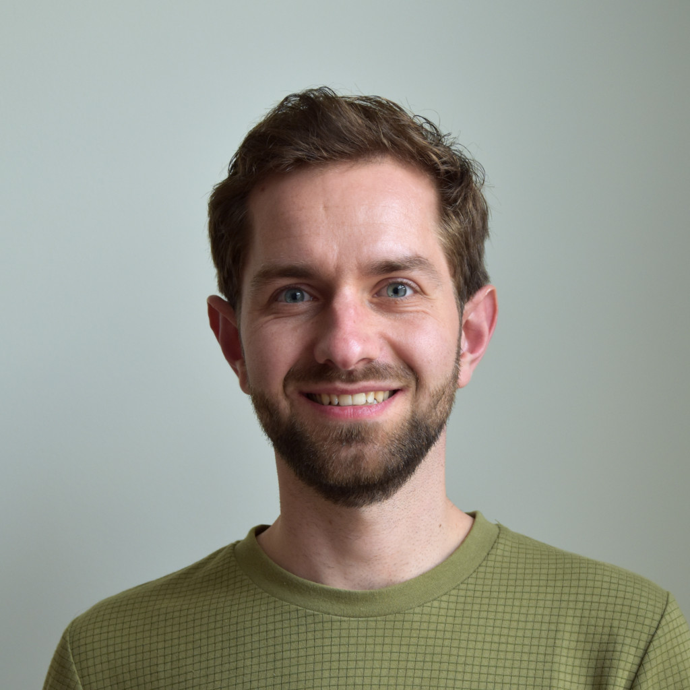

Jesse Vogel
In September 2020, I started as a PhD candidate at the Mathematical Institute at Leiden University, under the supervision of Márton Hablicsek. I am interested in algebraic geometry, character stacks, the Grothendieck ring of varieties and stacks, and automated theorem proving.
Contact info
Gorlaeus building room BW.1.19
Einsteinweg 55
2333 CC Leiden
ln.vinunediel.htam@legov.t.j
 jessetvogel.nl
jessetvogel.nl GitHub
GitHub